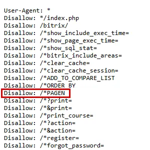
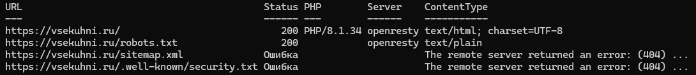
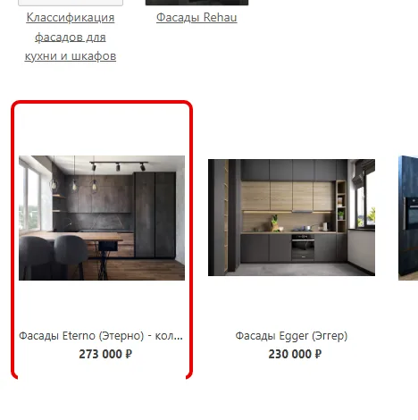
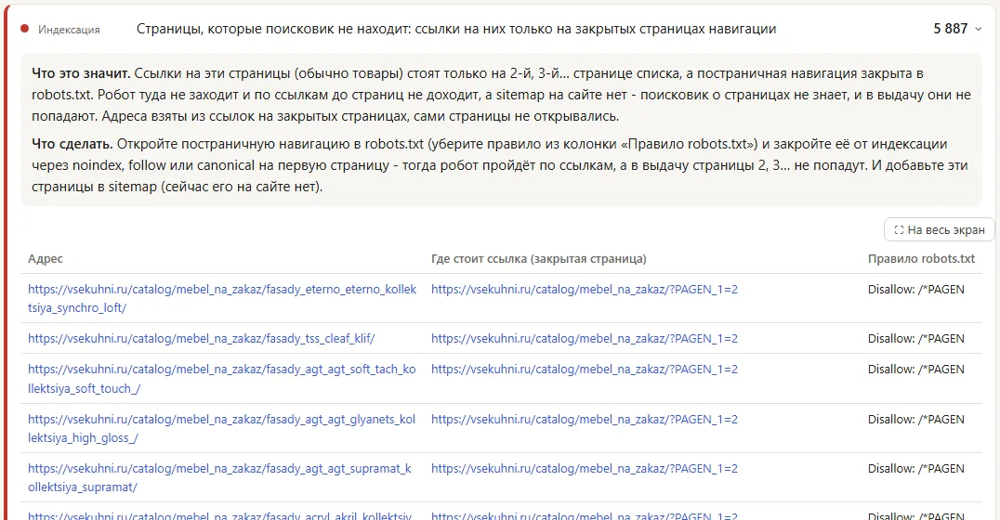
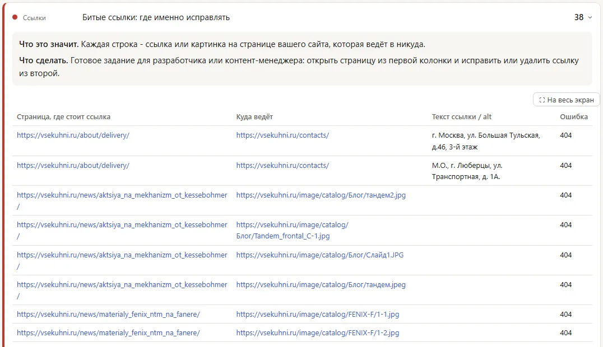
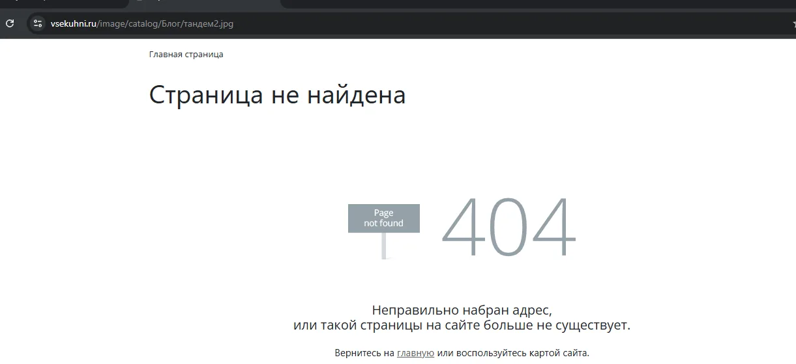
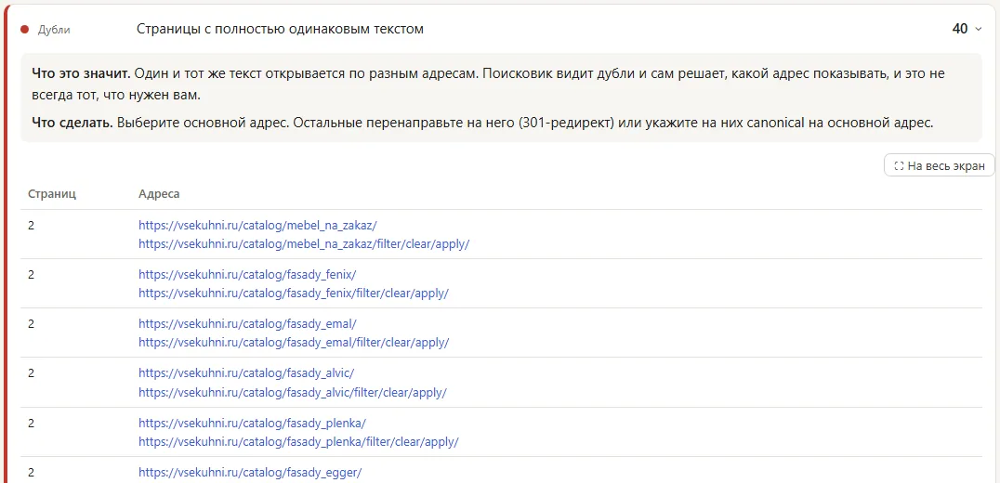
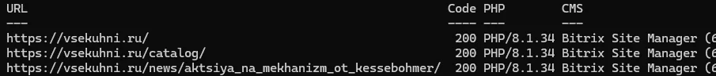
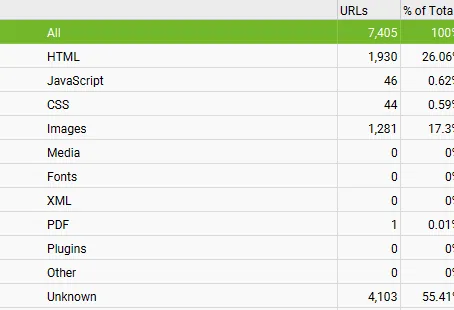

Это независимый SEO-аудит в формате образца работы по публичной версии vsekuhni.ru, выполненный 30.10.2026. Сайт обойдён программой Clayler SEO и отдельно Screaming Frog, ключевые находки перепроверены вручную запросами к серверу и в браузере. Ниже - наблюдения на дату аудита и рекомендации. Подтверждений внедрения и измерений после него нет.
Задача
Понять, какую часть каталога поисковый робот может найти сам, и отделить подтверждённые технические ошибки от шума автоматической проверки. Доступа к CMS, серверу, Яндекс Вебмастеру и Google Search Console не было. Клиентский бриф и целевые бизнес-показатели для этой работы не заявляются.
Методика
Обход шёл так, как ходит робот Яндекса: с учётом robots.txt, от главной по ссылкам, с выполнением JavaScript. После обхода программа отдельно открыла страницы каталога, закрытые в robots.txt, и собрала ссылки с них, не добавляя эти страницы в отчёт.
Независимый обход Screaming Frog использовался для сверки объёма. Коды ответа, заголовки сервера и наличие карты сайта проверены запросами из PowerShell и curl, отдельные страницы - в браузере.
Что проверялось
Открыто 2 064 страницы сайта и 1 562 картинки и файла. По правилам robots.txt пропущено 4 442 адреса: в основном ссылки входа и регистрации у каждого товара и страницы каталога 2, 3 и дальше. Платформа определена по заголовкам ответа сервера: 1С-Битрикс, PHP.
Ключевые находки
1. Каталог со второй страницы закрыт от робота
В robots.txt стоит правило Disallow: /*PAGEN: оно закрывает все страницы списков, кроме первой. Карты сайта нет: /sitemap.xml отвечает 404, в robots.txt адрес sitemap не указан. Значит, о товарах со второй и следующих страниц разделов роботу узнать неоткуда.
Программа открыла 834 закрытые страницы списков и нашла на них ссылки на 5 887 адресов, которых нет ни в открытой части сайта, ни в карте сайта. Для сравнения: открытых страниц - 2 064. Вручную проверен один пример: карточка «Фасады Eterno - коллекция Synchro (Loft)» стоит на /catalog/mebel_na_zakaz/?PAGEN_1=2 и не стоит на первой странице раздела, а сама карточка отвечает 200. Сами 5 887 адресов программа не открывала, поэтому это ссылки, а не подтверждённые рабочие страницы.
Рекомендация - открыть постраничную навигацию в robots.txt и закрыть страницы 2, 3… от индексации через noindex, follow или canonical на первую страницу, а затем сделать карту сайта со всеми товарами. Тогда робот дойдёт до товаров по ссылкам, а в выдачу не попадут сами страницы списков.




2. Картинки в новостях и ссылки на контакты вели на 404
Найдено 38 битых ссылок. 36 из них - картинки в новостях из папки /image/catalog/, например /image/catalog/Блог/тандем2.jpg: адреса стоят в коде статей, а файлов на сервере нет. Судя по пути, картинки остались от прошлой версии сайта. Посетитель видит в статье пустое место вместо фото.
Ещё две ссылки - адреса офиса и склада на странице доставки - ведут на /contacts/, а этот адрес отвечает 404. Обе ошибки подтверждены вручную. Рекомендация - загрузить картинки заново или убрать их из статей и поставить в ссылках с адресами рабочую страницу контактов.


3. Сброшенный фильтр открывал копию раздела
У 40 разделов каталога есть второй адрес вида /catalog/fasady_fenix/filter/clear/apply/ - это раздел со сброшенным фильтром. Он отвечает 200, открыт для индексации, canonical на основной раздел нет, а текст полностью совпадает. Поисковик видит 40 пар одинаковых страниц и сам выбирает, какую показывать.
Похожая картина у главной: /index.php отвечает 200 и открывает её копию. Этот адрес закрыт в robots.txt, поэтому риск ниже. Рекомендация - ставить на страницы сброшенного фильтра canonical на раздел или 301-редирект, а /index.php перенаправить на главную.

4. У раздела «Каталог» пустой Title
Страница /catalog/ отвечает 200 и открыта для индексации, но тег <title></title> у неё пустой. У остальных разделов Title есть и собран по шаблону «Каталог + название раздела». Поисковик подставит в сниппет текст по своему выбору. Рекомендация - задать Title общему каталогу в настройках раздела.
5. Сервер сообщал версию PHP
В ответе сервера на всех проверенных страницах есть заголовки X-Powered-By: PHP/8.1.34 и X-Powered-CMS: Bitrix Site Manager. Ветка PHP 8.1 больше не получает исправлений безопасности, а открытая версия упрощает подбор известных уязвимостей. На позиции это не влияет, поэтому приоритет низкий. Рекомендация - скрыть заголовки в настройках сервера и обновить PHP после проверки сайта на копии.

Что дополнительно проверялось
Контрольные проверки, которые не стали находками.
Сверка объёма со Screaming Frog
Независимый обход Screaming Frog дал 1 930 HTML-адресов и 4 103 адреса, закрытых в robots.txt (Unknown). Первый обход Clayler SEO в тот же день дал те же 1 930 ответов с типом HTML и 4 104 закрытых адреса, из них 2 - файлы. Повторный обход, по которому посчитаны находки, нашёл немного больше: 2 099 HTML-адресов и 4 442 закрытых.

Служебные ответы
Несуществующие адреса отвечают настоящим кодом 404, а не 200 со страницей ошибки. robots.txt отвечает 200.
Индексируемость страниц
На проверенных вручную главной, разделах, товаре и странице списка стоит index, follow, случайного noindex не найдено.
Приоритеты
High Мешают найти товары и ломают страницы
- Закрытая постраничная навигация без карты сайта
- Битые картинки в новостях и ссылки на контакты
Medium Дубли и пустые сигналы
- Копии разделов со сброшенным фильтром и копия главной
- Пустой Title у раздела «Каталог»
Low Настройки сервера
- Открытая версия PHP и устаревшая ветка 8.1
Это группировка исправлений внутри аудита, а не прогноз бизнес-эффекта.
Рекомендации
- Открыть постраничную навигацию. Убрать
Disallow: /*PAGEN, закрыть страницы 2, 3… черезnoindex, followили canonical на первую страницу. - Сделать карту сайта. Включить в неё все товары и разделы и указать её адрес в robots.txt.
- Починить битые ссылки. Вернуть или убрать 36 картинок в новостях, исправить две ссылки на контакты.
- Убрать копии разделов. Canonical или 301 со страниц
/filter/clear/apply/на раздел,/index.php- на главную. - Заполнить Title каталога. Задать заголовок странице
/catalog/. - Закрыть версию PHP. Скрыть служебные заголовки и обновить PHP после проверки на копии сайта.
Это рекомендации по результатам аудита, а не перечень внедрённых изменений.
Ограничения
Аудит проводился 30.10.2026 по публичной версии сайта без доступа к CMS, серверу, Яндекс Вебмастеру и Google Search Console. Сколько страниц сайта реально в индексе, не проверялось. Адреса за закрытой навигацией собраны из ссылок и не открывались, вручную проверен один пример. Ручные проверки выполнялись на отдельных страницах и не переносятся автоматически на весь сайт. Скорость загрузки и тексты страниц в этот кейс не вошли.
Статус работы
Статус: Образец работы. Аудит и рекомендации подготовлены. Внедрение рекомендаций и результаты после него не подтверждены, поэтому здесь нет заявлений о росте трафика, позиций, продаж, конверсий или иных неподтверждённых результатах.